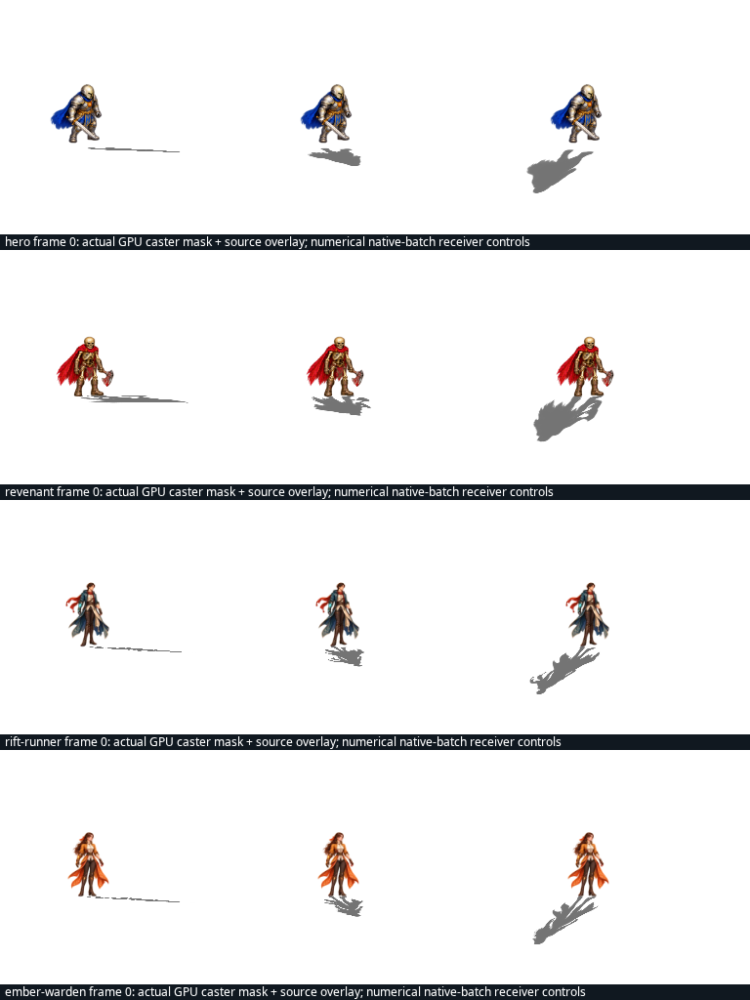

All 445 original atlas frames: both mirrors, three suns, production GPU crossed-body casting and native sprite-batch receiving. The inverse projection checker uses original alpha, quantized vertex heights and measured raster subpixel/bilinear bounds. This proves the declared proxy contract; it does not reconstruct 3D mesh depth.
Per-frame GPU report · Targeted overlap regression · Original shader failure control · Static families
Source overlay on actual two-layer GPU caster masks, frame 0 of each family at three suns. Numerical controls cover every frame, not only these previews.

| Frame | Clips | Cast cases | Receiver controls | Alpha hash |
|---|